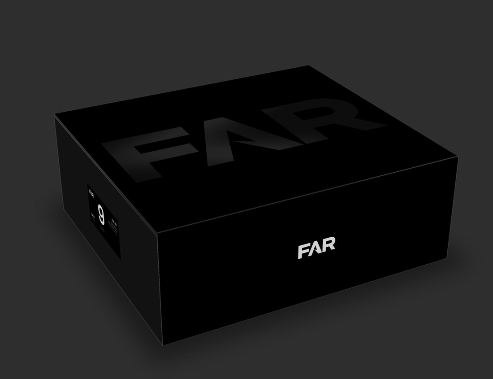
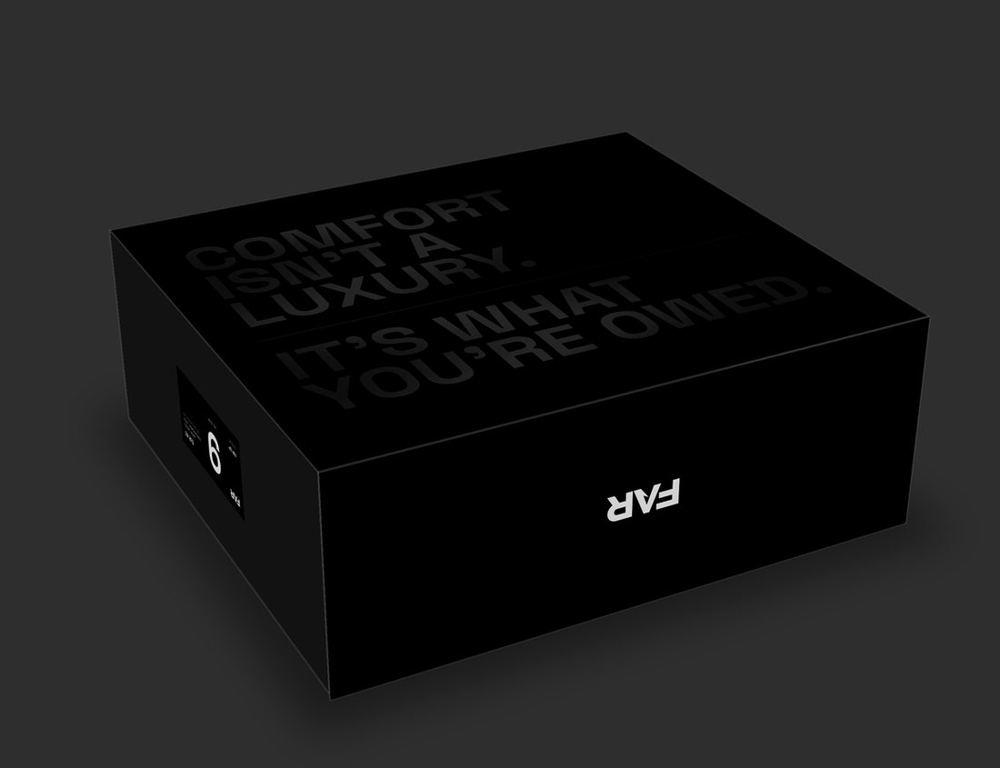
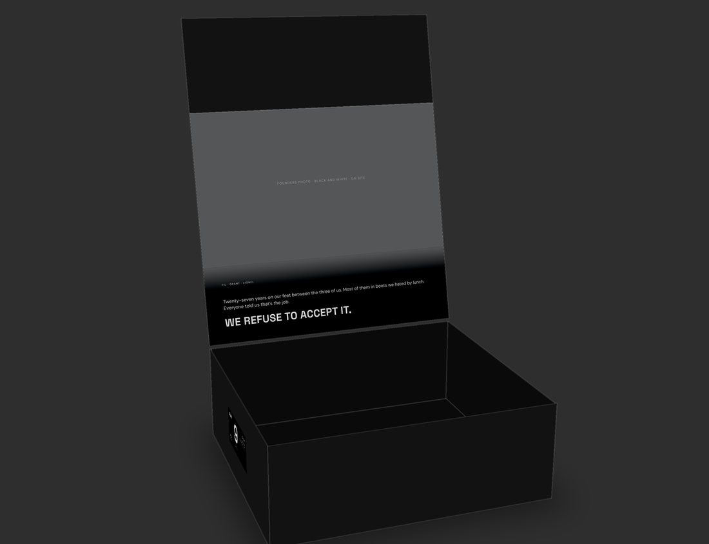
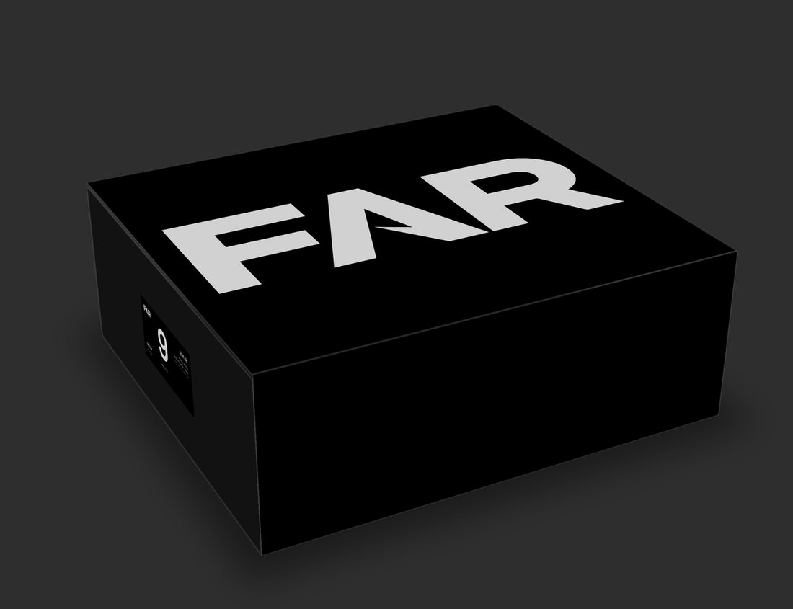
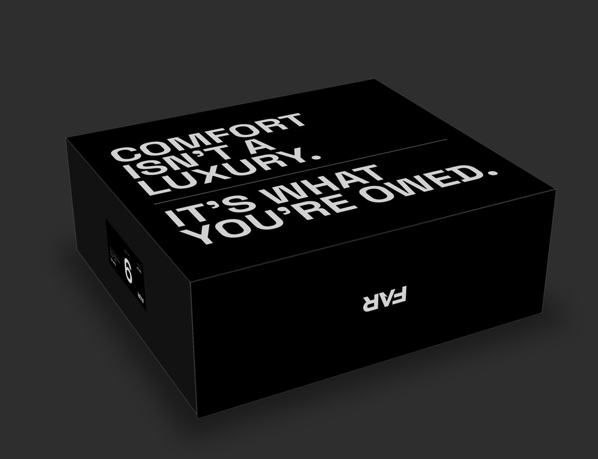

Every pair of the first 500 ships in this box. Magnetic flip-top, made by Don's box supplier, artwork due to Don by 15 October.
The big FAR on the lid is black gloss on matte black. No white ink. It shows when the light catches it, like the premium boxes we used as inspiration. One small white FAR sits on the front flap so it still reads on camera.

Closed. The gloss is shown lighter here so you can see it on a screen.

Turned over: "Comfort isn't a luxury. It's what you're owed." in the same black gloss.

Open. Inside the lid: a black and white photo of the three of us (grey box for now), a two-line story, and WE REFUSE TO ACCEPT IT.
Same layout, but the big FAR and the Creed are printed white. Louder on camera, less premium in the hand.


The print files live in the FAR brain (box artwork generator, S1216). This page is unlisted, but anyone holding the link can open it.